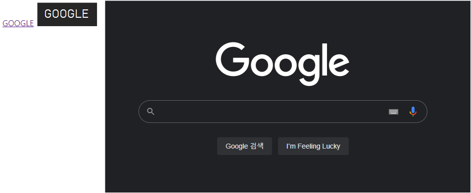
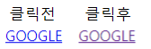
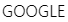
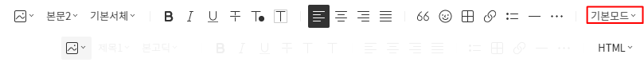
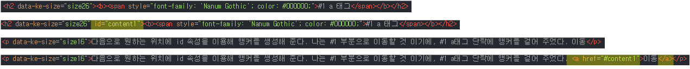

* 개인적인 공부 내용을 기록하는 용도로 작성한 글 이기에 잘못된 내용을 포함하고 있을 수 있습니다.
#1 a 태그
- a 태그 주요 속성
#2 하이퍼링크 밑줄 글자색 제거
#3 앵커(anchor)
#1 a 태그
<a>태그는 "링크"를 만들 때 사용하는 태그이다. <a> 태그를 텍스트와 함께 사용하면 텍스트 링크가 되고, 이미지와 함께 사용하면 이미지링크가 된다. 기본형은 다음과 같다.
<!--텍스트 링크-->
<a href="링크주소" [속성="속성 값"]> text </a>
<!--이미지 링크-->
<a href="링크주소" [속성="속성 값"]> <img src="이미지 파일 경로"> </a>
다음은 구글 메인 홈페이지로 이동하는 예시 코드이다.
<!doctype html>
<html lang="ko">
<head>
<meta charset="utf-8">
<title>link_test</title>
</head>
<body>
<a href="https://www.google.com/">GOOGLE</a>
<a href="https://www.google.com/"><img src="Google.png"></a>
</body>
</html>
[a 태그의 주요 속성]
href - 링크한 문서 혹은 사이트의 주소를 입력한다.
target - 링크한 내용이 표시될 위치를 지정한다.
_blank : 링크 내용을 새 탭에서 연다.
_self : target 속성의 기본 값으로 링크가 있는 화면에서 열린다.
download - 링크한 내용을 보여주는 것이 아니라 다운로드한다.
#2 하이퍼 링크 밑줄 글자색 제거
텍스트 링크는 텍스트와 링크를 구분하기 위해 기본적으로 밑줄이 있는 파란색 글자로 표시된다. 또한 링크를 한 번 클릭 하면 보라색으로 바뀐다.

CSS코드를 이용하면 초기 기본 설정을 변경할 수 있다. text-decoration 속성을 이용해 밑줄을 제거하고, color 속성을 이용해 글자의 색깔을 검은색으로 변경했다.
<style>
a {
text-decoration:none;
color:black;
}
</style>
#3 앵커(anchor)
'앵커(anchor)'란 한 페이지 내에서 링크를 만들 수 있는 기능이다. 한 페이지에 많은 내용을 포함하고 있는 경우 앵커를 사용하면 특정 요소를 클릭 원하는 위치로 이동할 수 있도록 도와준다.
이동하고 싶은 위치에 id속성을 이용해 앵커를 만들어 준다. 이 때 앵커의 이름은 각각 다른 이름을 지정해야 한다. 다음으로 a 태그의 href 속성을 이용해 앵커를 표시한다. 단, a태그의 앵커 이름 앞에는 #을 붙여서 앵커를 표시한다.
<a href="#앵커 이름"> 텍스트 or 이미지 </a>
<태그 id="앵커 이름"> 텍스트 or 이미지 </태그>앵커를 사용해 #1 a 태그 부분으로 바로 이동하도록 html 소스를 수정해 보도록 하겠다.
우선 우측 상단의 기본모드를 HTML로 변경한다.

다음으로 원하는 위치에 id 속성을 이용해 앵커를 생성해 준다. #1 부분으로 이동할 것 이기에, #1 a태그 단락에 앵커를 걸어 주었다. 이동
